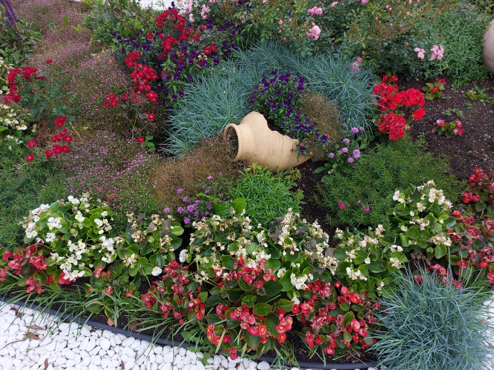
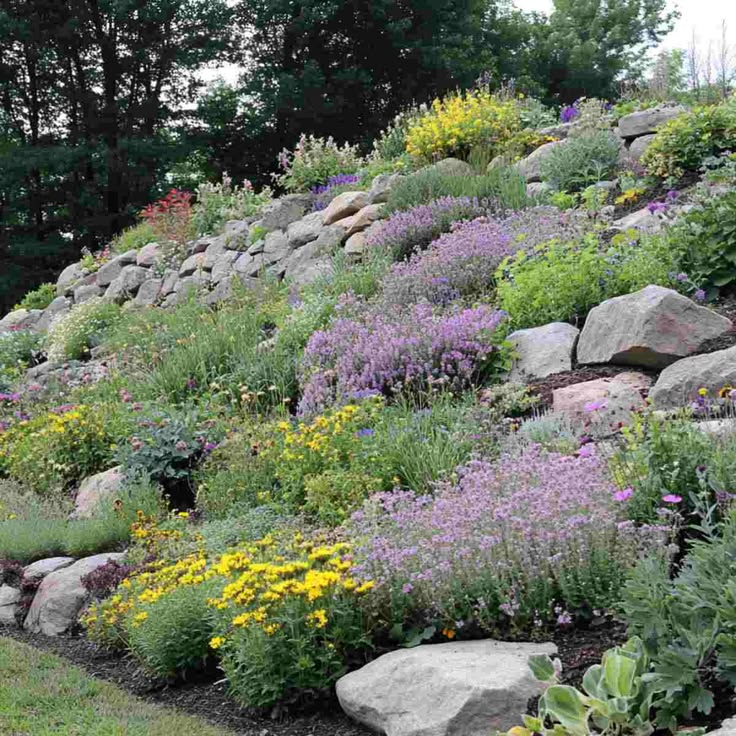
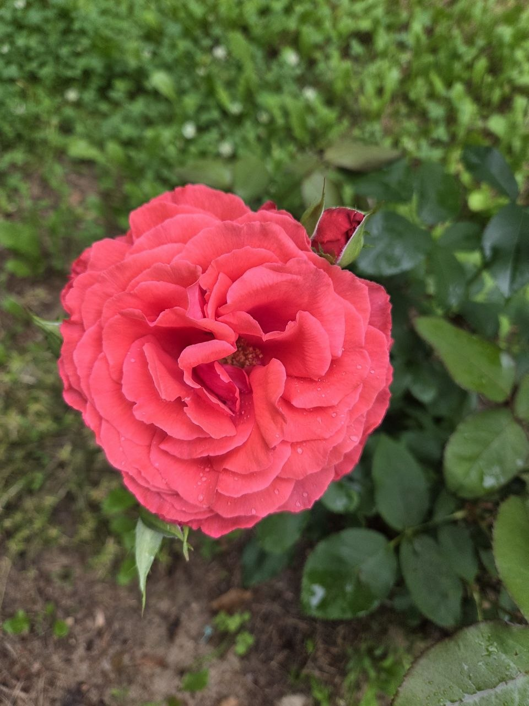
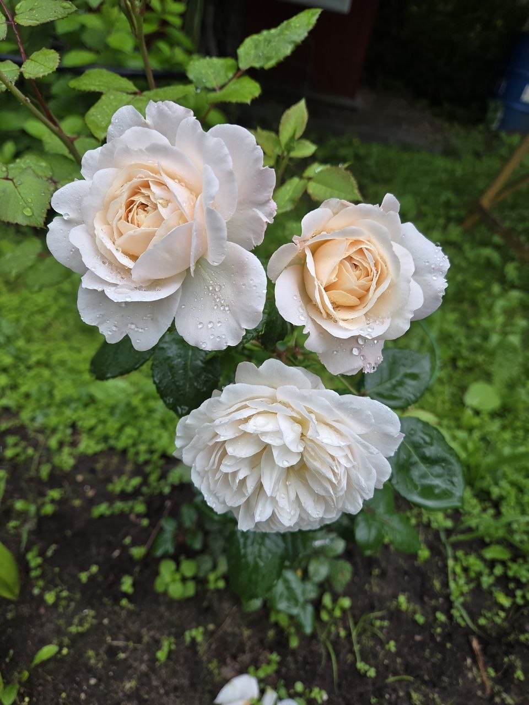
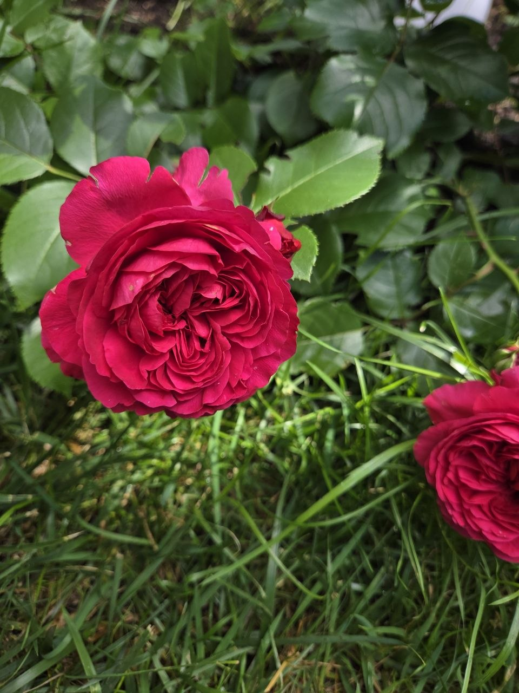
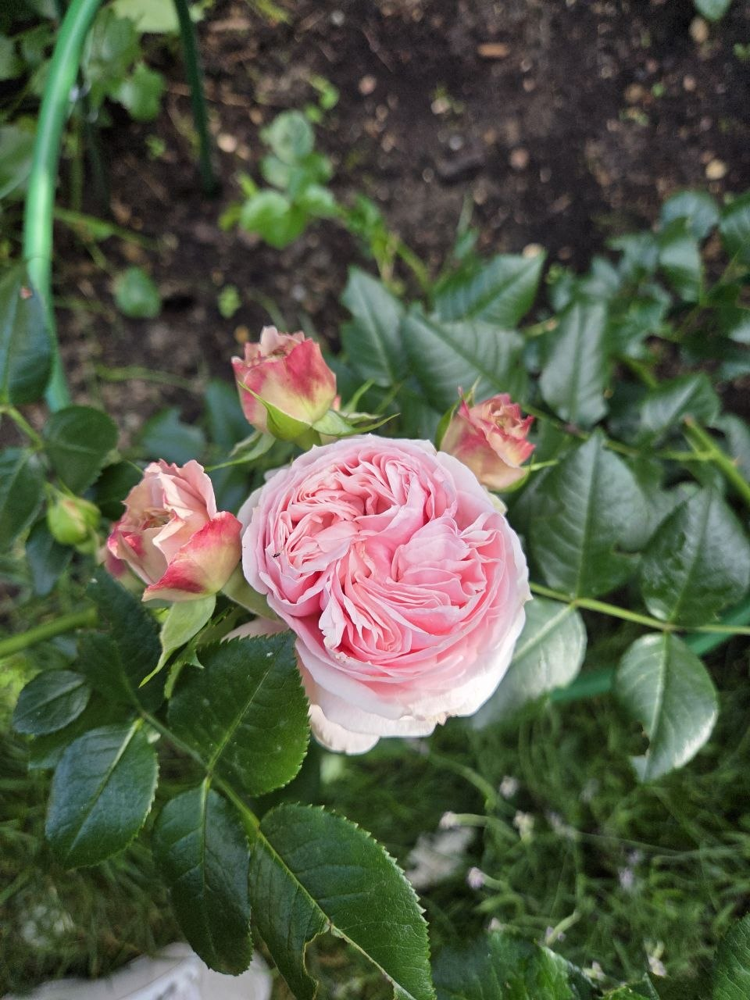
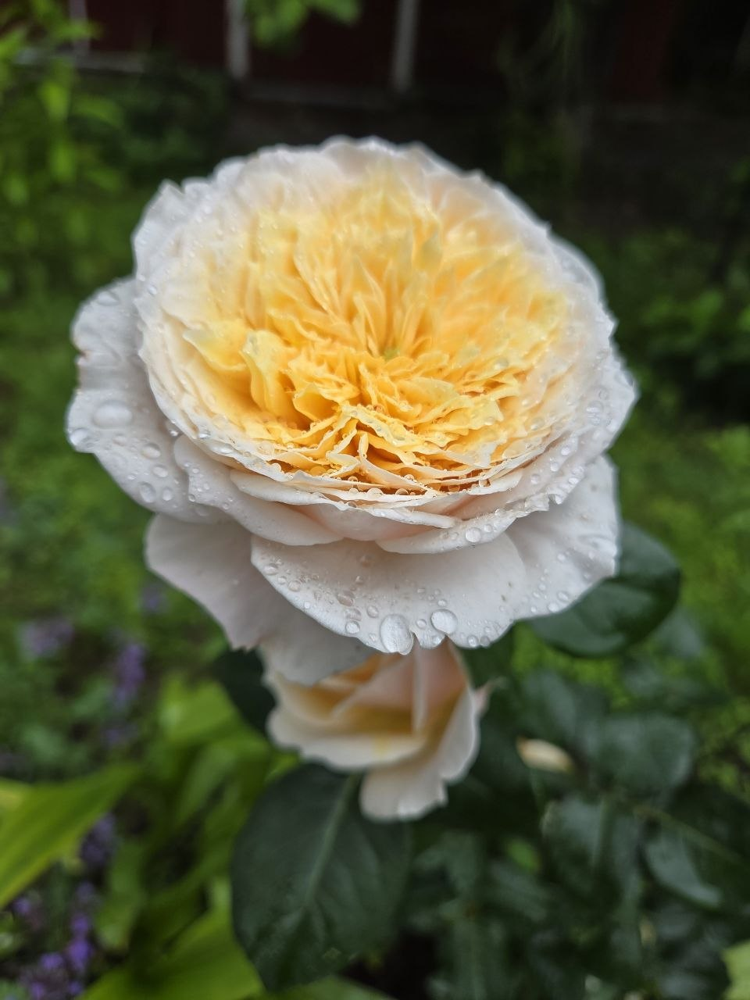

Цветы в ассортименте:
|
|||
Разделы: |
График работ: ПН-ЧТ 10:00-19:00 ПТ-СБ 10:00-17:00 ВС выходной |
||
|
Внимание! Теперь мы оказываем ещё и услуги ландшафтного дизайна! |
|||
Мы не просто продаем растения, мы создаем гармоничное пространство вокруг вас. Наши специалисты занимаются комплексным озеленением частных домов, дач и загородных участков. Мы разрабатываем индивидуальные проекты ландшафтного дизайна, создаем альпийские горки, розарии, живые изгороди и многолетние клумбы под ключ. За годы работы мы помогли сотням клиентов превратить их участки в настоящие уголки природы, где каждое растение подобрано с учетом типа почвы, освещения и ваших личных предпочтений.


Мы понимаем, как важно, чтобы саженец прижился на новом месте, поэтому уделяем особое внимание бережной транспортировке. Все растения доставляются в специальных контейнерах с закрытой корневой системой, что гарантирует высокую приживаемость и минимальный стресс для растений. Мы осуществляем доставку по городу и области в течение суток после оформления заказа. Если вы хотите ускорить процесс, вы всегда можете приехать в наш питомник в часы работы, выбрать саженцы на месте и забрать их самостоятельно.
НаверхВ нашем питомнике представлен богатейший выбор садовых роз: от классических чайно-гибридных до роскошных плетистых и неприхотливых парковых сортов. Все наши саженцы прошли адаптацию к местному климату, обладают мощной корневой системой и высокой устойчивостью к распространенным заболеваниям. В каталоге вы найдете розы на любой вкус — с нежным ароматом или ярким насыщенным запахом, классических оттенков или редких пестрых расцветок. Все растения готовы к высадке в открытый грунт и будут радовать вас своим цветением долгие годы.
Нажмите на миниатюры, чтобы рассмотреть розы в полном размере:





Для оформления заказа достаточно заполнить форму на сайте или связаться с нами напрямую:
Instagram: @FloraPitomnik
Telegram: @FloraPitomnik
Gmail: FloraPitomnik67@gmail.com
+79160006767